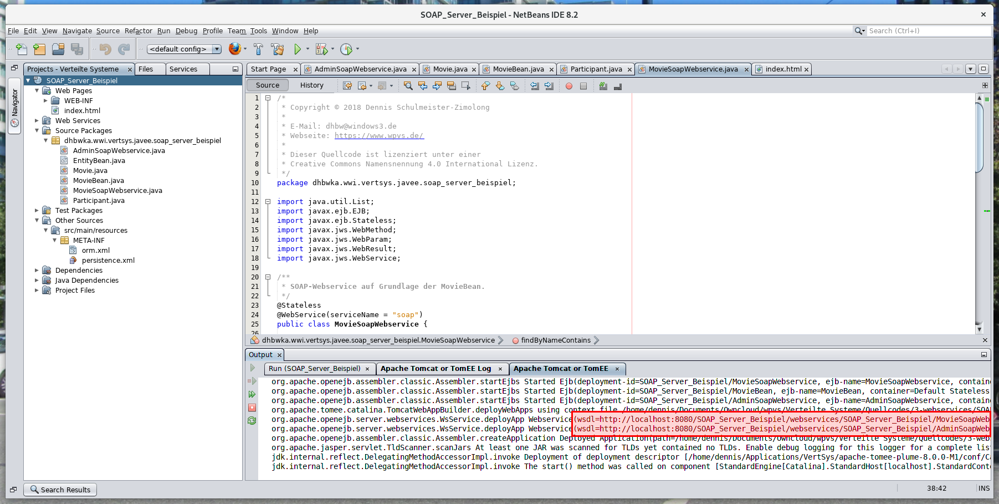
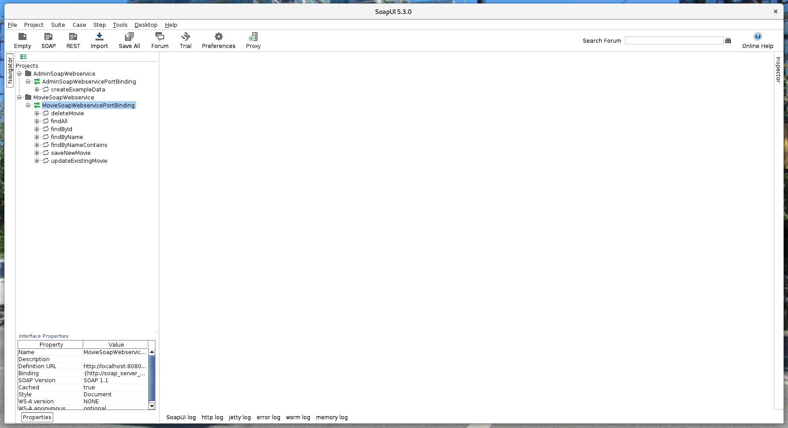

Nicht immer besitzt eine Webanwendung auch wirklich eine grafische Weboberfläche.
Manchmal reicht es auch schon aus, ein paar Funktionen über das Web entfernt aufrufbar
zu machen. Wie das geht, erfährst du hier.
Lernziele dieser Einheit
Nach Abschluss dieser Einheit kannst du …
Die Idee hinter SOAP-Webservices und typische Anwendungsfälle beschreiben.
SOAP-Nachrichten interpretieren sowie eigene SOAP-Anfragen formulieren.
Erklären, was eine WSDL-Beschreibung ist und wozu sie benötigt wird.
WSDL-Dateien in SoapUI importieren und fremde Webservices damit testen.
Eigene SOAP-Webservices mit den JAX-WS-Annotationen von Java entwickeln.
Java-EE-Anwendungen mit SOAP-Webservices übersichtlich und wartbar strukturieren.
Entfernte Webservices mit JAX-WS aus Java heraus aufrufen.
Netbeans zur Generierung der für den Aufruf benötigten Webservice-Stubs verwenden.
Sehr häufig werden Webservices dazu genutzt, B2B-Szenarios zwischen mehreren Unternehmen abzubilden, wofür ein Unternehmen
Webservices bietet, die von seinen Kunden und Lieferanten aufgerufen werden können. Dadurch können die Systeme aller
beteiligten Unternehmen untereinander Daten austauschen, um manuelle Prozessschritte zu eliminieren. Die nachfolgende
Abbildung zeigt zum Beispiel, wie ein Großkunde eine Bestellung bei einem Händler aufgibt, was wiederum zur automatischen
Erteilung eines Produktions- und eines Lieferauftrags bei zwei weiteren Unternehmen führt.
Innerhalb eines Unternehmens können Webservices genutzt werden, um heterogene Anwendungen über einen Integrationsserver
miteinander zu verbinden. Üblicherweise bieten die Anwendungen, die meistens von unterschiedlichen Herstellern stammen und
nicht miteinander kompatibel sind, hierfür eine Webservice-Schnittstelle, die durch den Integrationsserver bedient
werden kann. Zusätzlich können auf dem Server weitere, durch die Anwendungen aufgerufene Webservices definiert werden,
wobei der Server die Aufrufe umwandelt und dann entsprechend weiterleitet. Manche Server besitzen darüber hinaus sogar
eine Regel-Engine, mit der automatisch ablaufende Geschäftsprozesse gesteuert werden können.
Jeder SOAP-Webservice besitzt eine WSDL-Beschreibung, in der alle aufrufbaren
Operationen, die hierbei ausgetauschten XML-Nachrichten, das Transportprotokoll und die URL in einem maschinenlesbaren XML-Format
definiert sind. Sie besitzt ungefähr folgenden Aufbau:
üìÉ
Typdefinitionen der ausgetauschten XML-Daten mit XML Schema
üìÉ
Definition der aufrufbaren Operationen (in Java würde man „Methoden” sagen)
üìÉ
Zusammenfassung mehrere Operationen zu einem Interface (WSDL 2.0) bzw. Port Type (WSDL 1.1)
üìÉ
Definition des Bindings mit dem Transportprotokoll, URL und Aufrufsemantik des Webservices
Das nachfolgende Beispiel zeigt die WSDL-1.1-Beschreibung für einen BuchladenWebservice
mit sucheNachStichwort als einziger Operation:
<definitions name="BuchladenWebservice"
xmlns:soap="http://schemas.xmlsoap.org/wsdl/soap/"
xmlns:xs="http://www.w3.org/2001/XMLSchema"
xmlns="http://schemas.xmlsoap.org/wsdl/">
<!-- Zunächst werden mit XML Schema alle XML-Strukturen definiert, die -->
<!-- in irgend einer Form zwischen Client und Server ausgetauscht werden. -->
<!-- Dabei muss es für jede Operation mindestens eine Anfrage- und eine -->
<!-- Antwortstruktur geben. Darüber hinaus können aber noch beliebige -->
<!-- weitere Strukturen definiert werden. -->
<types>
<xs:schema>
<!-- Anfrage für „sucheNachStichwort” -->
<element name="sucheNachStichwort"> … </element>
<!-- Antwort für „sucheNachStichwort” -->
<element name="sucheNachStichwortResponse"> … </element>
<!-- Struktur für ein einzelnes Buch -->
<element name="buch"> … </element>
</xs:schema>
</types>
<!-- Anschließend werden für jede Operation die Anfrage- und die Antwort- -->
<!-- Nachrichten des soap:Body definiert. Die Nachrichten beziehen sich -->
<!-- dabei auf die Schemadefinitionen von oben. -->
<message name="SucheNachStichwortRequestBody">
<part name="RequestBody" element="sucheNachStichwort"/>
</message>
<message name="SucheNachStichwortResponseBody">
<part name="ResponseBody" element="sucheNachStichwortResponse"/>
</message>
<!-- Darauf aufbauend können die Port Types mit den darin enthaltenen, -->
<!-- aufrufbaren Operationen definiert werden. Jeder Port Type kann -->
<!-- beliebig viele Operationen beinhalten und es kann auch beliebig -->
<!-- viele Port Types geben. Für jede Operation wird auf die oben -->
<!-- definierten XML-Nachrichten verweisen. -->
<portType name="BuchSuchePortType">
<operation name="sucheNachStichwort">
<input message="tns:SucheNachStichwortRequestBody"/>
<output message="tns:SucheNachStichwortResponseBody"/>
</operation>
</portType>
<!-- Als nächstes folgt das Binding, das hauptsächlich HTTP als Protokoll -->
<!-- zur Übertragung definiert und mit use="literal" festlegt, dass die -->
<!-- XML-Nachrichten strikt dem XML-Schema entsprechen müssen. -->
<binding name="BuchSucheBinding" type="tns:BuchSuchePortType">
<soap:binding style="document" transport="http://schemas.xmlsoap.org/soap/http"/>
<operation name="sucheNachStichwort">
<soap:operation>
<input>
<soap:body use="literal"/>
</input>
<output>
<soap:body use="literal"/>
</output>
</operation>
</binding>
<!-- Und schlussendlich die URL zum Aufruf des Webservices. -->
<service name="BuchSucheService">
<port name="BuchSuchePort" binding="tns:BuchSucheBinding">
<soap:address location="http://example.com/soap/buchsuche/"/>
</port>
</service>
</definitions>
Anfrage und Antwort werden im SOAP-XML-Format kodiert und durch einen einfachen HTTP-Aufruf übertragen. Die aufgerufene URL, sowie
der genaue Inhalte der XML-Nachrichten ergibt sich aus der WSDL-Beschreibung. Der Aufruf erfolgt immer als POST-Anfrage.
Angenommen, du hast einen Webservice entwickelt und startest diesen in Netbeans. Dann zeigt Nebeans am Ende
des Glassfish-Protokolls die URLs des Webservices an.

Wenn du ?wsdl an die URLs anhängst, kannst du im Browser die WSDL zu jeder EJB abrufen.
Für SoapUI musst du die WSDLs nicht manuell herunterladen. Du musst allerdings je WSDL ein neues SOAP-Projekt anlegen.
Dadurch öffnet sich folgendes Fenster. Kopiere die URL der WSDL hier herein und gib dem Projekt einen Namen.
Das neue Projekt taucht dann links in der Baumansicht auf. Anhand der WSDL konnte SoapUI auch bereits die verfügbaren Operationen erkennen.

Per Doppelklick auf ein Binding öffnet sich ein Fenster mit allerlei nützlichen Informationen über den Webservice.
Beispielsweise gibt es hier auch einen praktischen WSDL-Viewer, der eine schnelle Navigation innerhalb der WSDL ermöglicht.
SoapUI het bereits zu jeder Operation eine Beispielanfrage generiert, die sich per Doppelklick öffnen lässt.
Über das Kontextmenü lassen sich noch beliebig weitere Beispielanfragen erzeugen.
So wie diese hier, wo der Parameter <name>Spaceballs</name> an den Webservice übergeben wird. Per Klick
auf das grüne Play-Symbol wird die Anfrage abgeschickt.
Wenig später taucht dann rechts die Antwort auf.
Über die „raw”-Buttons lassen sich die HTTP-Rohdaten der Anfrage und Antwort anzeigen. Dadurch siehst du dann auch die gesendeten Header Fields.
Damit endet unsere kleine SoapUI-Tour. Das Tool sollte ein keinem Werkzeugkoffer fehlen. üîß
Lade dir von Moodle den Beispiel-Webservice herunter und lasse ihn in Netbeans laufen. Anschließend importiere seine beiden
WSDLs in SoapUI und erkunde ein wenig die angeboten Operationen, indem du erst die Operation createExampleData
des AdminSoapWebservice und dann die anderen Operationen ausführst. Vergleiche dabei auch, wie die Attribute
der Movie und der Participant-Klassen im XML abgebildet werden.
Aufgabe 2: Ein kleines Webservice-Quiz
Aufgabe 2.1: Allgemeine Fragen
a) Für welche der typischen Anwendungsfälle wird SOAP typischerweise genutzt
Zur Bereitstellung eines Serverbackends für clientseitige Webanwendungen
Zur Automatisierung unternehmensübergreifender Geschäftsprozesse
Zur Interprozesskommunikation mehrerer Programme auf demselben Rechner
Zur Kommunikation von IoT-Devices mit einem Server in der Cloud
Zur Integration unterschiedlicher Anwendungen verschiedener Hersteller
b) Webservices besitzen häufig eine HTML-Oberfläche.
Wahr
Falsch
c) Welche der folgenden Aussagen stimmt nicht?
Webservices setzen voraus, dass Client und Server in Java geschrieben sind.
Webservices nutzen HTTP und andere Webtechniken zum maschinellen Datenaustausch.
SOAP-Webservices nutzen darüber hinaus XML als Nachrichtenformat.
Aufgabe 2.2: Fragen zur Technik
a) Welche Aufgabe erfüllt die WSDL eines SOAP-Webservices?
Sie dient als menschenlesbare Dokumentation des Webservices.
Sie dient als maschinenlesbare, formale Definition des Webservices.
Sie dient als Beispielcode zum Aufruf des Webservices.
b) Welche der folgenden WSDL-Versionen werden von Java unterstützt?
WSDL 1.1
WSDL 2.0
c) Welche Aufgabe erfüllen die Port Types bzw. Interfaces einer WSDL?
Sie definieren die Struktur der ausgetauschten XML-Nachrichten.
Sie definieren die Namen aller vorhandenen Operationen.
Sie fassen mehrere Operationen zusammen und weisen ihnen XML-Nachrichten zu.
Sie definieren das Transportprotokoll und die URL des Webservices.
d) Welche HTTP-Verben kann ein Client zum Aufruf eines SOAP-Webservices verwenden?
GET, PUT, POST oder DELETE, je nach aufgerufener Operation
Nur GET und POST
Nur POST und DELETE
Nur GET
Nur POST
Nur PUT
e) Welches Beispiel entspricht am ehestem dem Aufbau einer SOAP-Nachricht?